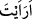

ettiler. Meleklerin Allah’ın emirlerine uyup yasaklarından kaçınmaları onların ezelî
saâdetlerine delâlet eder. Ancak İblis secde etmedi. Çünkü o kibirlenip secde etmekten
sakındı. Bu gösteriyor ki muhalefet, büyüklenmek ve kaçınmak, ezelî şakâvete delâlet
eder. Çünkü ebed, ezelin aynasıdır. Orada kişinin hâli, saîd ve şakî olarak gözükür.
Bahru’l-ulûm’da der ki: İblis cinlerden olduğu halde meleklerden istisna edilmiştir.
Çünkü ona da meleklerle birlikte secde edilmesi emredilmiştir. Dolayısıyla meleklerin
çoğunluğu dikkate alınmıştır.
Allah İblis’i: “Ey İblis! Sana ne oluyor da secde edenlerle birlikte secde etmiyorsun”
(el-Hıcr, 15/32) diyerek azarladığında kendini beğenerek, kibir ve inkârından dolayı
îtiraz ederek “İblis: “Ben çamurdan yarattığın bir kimseye secde eder miyim?” dedi.”
Çünkü ben yüce bir unsurdan, ateşten yaratılmışım, dedi. Benim secde etmem doğru
değildir ve imkânsızdır. Çünkü inkâr için olan soru (istifhâm-ı inkârî) olumsuzluk
mânâsı ifâde eder. İşte bu îtirazından dolayı İblis lânete, kovulmaya ve uzaklaştırılmaya
müstehak oldu.
62. “Şu benden üstün kıldığına da bir bak! Yemin ederim ki, eğer beni kıyâmete
kadar yaşatırsan, pek azı dışında, onun neslini kendime bağlayacağım!” dedi.
İblis lânetlenip kovulduktan ve uzaklaştırıldıktan sonra düşmanlığını ortaya koyarak
ve hased ederek şöyle dedi: “Şu benden üstün kıldığına da bir bak!” el-İrşâd’da
belirtildiğine göre İblis bu sözleri önceki âyetteki sözlerinden hemen sonra söylememiş,
mele-i a‘lâdan ebediyyen lânetlenerek kovulduktan sonra kıyâmete kadar kendisine süre
verilmesini istemesinden ve müddet verilmesinden sonra söylemiştir. Başka bir âyette
bu husus açıkça zikredildiği için o açıklamayla yetinilerek burada açıkça
zikredilmemiştir. Çünkü lânetli İblis’in iki sözünün arasına “dedi” diyerek girilmesi,
ikinci cümlenin birinci cümlenin devamı olmadığını, onun üzerine bina edilmediğini,
aksine başka bir cümle üzerine atıfta bulunulduğunu bildirmek içindir.
“
” bana haber ver, demektir. Burada haber vermenin sebebi olan ilim haber
vermekten mecaz yapılarak “bana bildir” mânâsı verilmiştir. Her ikisinin de talebe
delâletinden dolayı buradaki soru edâtı da emirden mecaz yapılmıştır. Buna göre mânâ
şöyledir: “Kendisine secde etmemi emretmek sûretiyle bana üstün kıldığın şu kimseden
haber ver. Onu niçin bana üstün kıldın, hilafet ve secdeyle fazîletli eyledin? Halbuki
ben ondan daha hayırlıyım. Çünkü o çamurdan yaratıldı. Ben ise ateşten yaratıldım.”
Mesnevî de der ki:
Âdem’i bedenden ibaret gören, ona secde etmemiştir.